<!doctype html>
<html>
	<head>
		<meta charset="utf-8">
		<meta name="viewport" content="width=device-width, initial-scale=1.0, maximum-scale=1.0, user-scalable=no">

		<title>Give a Developer a Dot</title>

		<link rel="stylesheet" href="css/reveal.css">
		<link rel="stylesheet" href="css/theme/night.css">

		<!-- Theme used for syntax highlighting of code -->
		<link rel="stylesheet" href="lib/css/zenburn.css">

		<!-- Printing and PDF exports -->
		<script>
			var link = document.createElement( 'link' );
			link.rel = 'stylesheet';
			link.type = 'text/css';
			link.href = window.location.search.match( /print-pdf/gi ) ? 'css/print/pdf.css' : 'css/print/paper.css';
			document.getElementsByTagName( 'head' )[0].appendChild( link );
		</script>
	</head>
	<body>
		<div class="reveal">
			<div class="slides">
			 <section data-transition="zoom" data-markdown data-markdown data-separator="^\n---\n$" data-separator-vertical="^\n--\n$">
			  <script type="text/template">


<!-- .slide: data-background-image="images/blue_columbusoh.png" -->
### If you give a Developer a Dot
---
Brought to you by Wray Mills

Powered By [CapTech Consulting](https://www.captechconsulting.com)

<br /><br /><br /><br /><br /><br />


			  
---


<!-- .slide: data-background-image="images/family.jpg" -->
### About Me
#### Old, but with young kids
---
* A wife and 3 girls (8,10,12)
* In IT over 20 years!
* Python for almost 25 years!
* Consultant for CapTech Consulting
* Now focused on teaching (including kids)
 * My own kids know Python

<aside class="notes">
		Oh hey, these are some notes. They'll be hidden in your presentation, but you can see them if you open the speaker notes window (hit 's' on your keyboard).
</aside>


---


<!-- .slide: data-background="#ff0000" -->
### Developing a skill requires

* Amazon Developer Account
* Amazon Console Account
 * Or some way to deploy web service
* Alexa enabled device (e.g. a Dot)
 * Can be Reverb on Phone


---


<!-- .slide: data-background-image="images/BabyGrootCookie01.jpg" -->
### So, a Developer gets a Dot

#### Alexa/Amazon overview
---
* ASK (Skills Kit) and AVS (Voice Service)
* Echo, Tap, Dot
* [Developer.amazon.com](developer.amazon.com)
* [AWS.amazon.com](aws.amazon.com)


--


---


### Intents and Utterances

* Go to Developer account, Alexa tab, ASK
* Create a skill (Small Business site - ACME, Inc.)
* Invocation Name


--


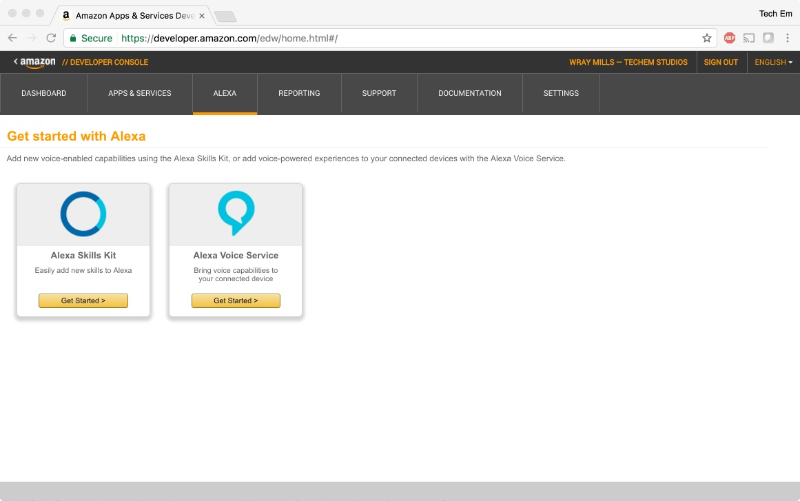


--


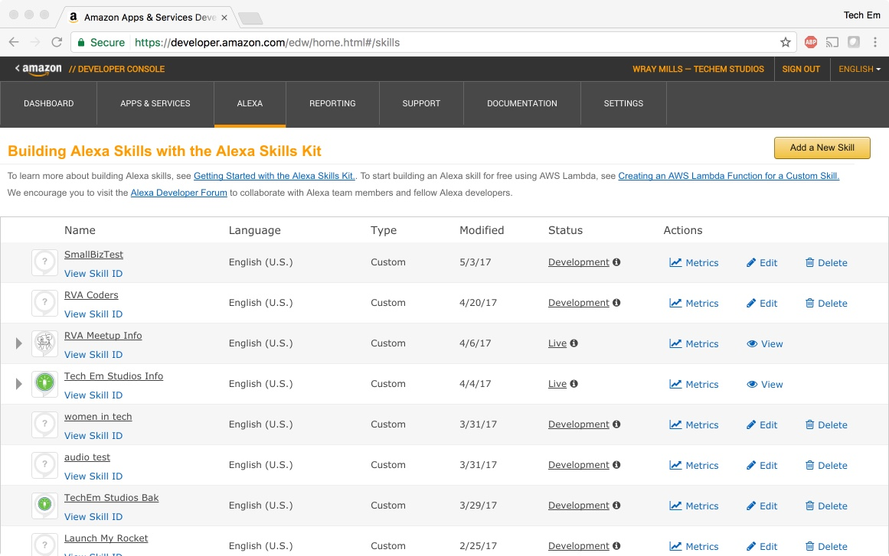


--

* Must Define your "intents"
* Define "utterances" that are the phrases to match to intents
* Alexa, ask [or tell] {invocation name} [for] {intent}
* Alexa, ask 'Small Biz' for General Information


--


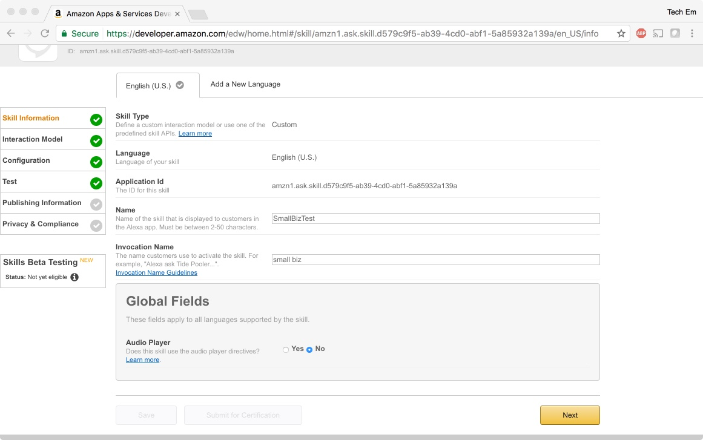


--


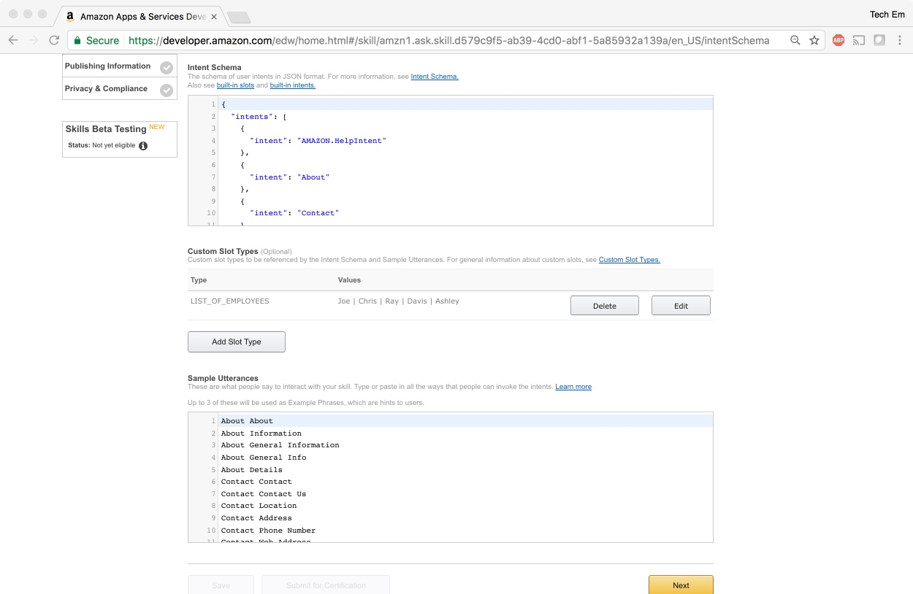


---


### Provide a service
---
* Yes, finally getting to the serverless part
* You can create your own web service to handle the ASK JSON request/response
* But, the point for my talk is to use this as an opportunity to try lambda services
* Recommend, you go ahead and get started doing things manually


--


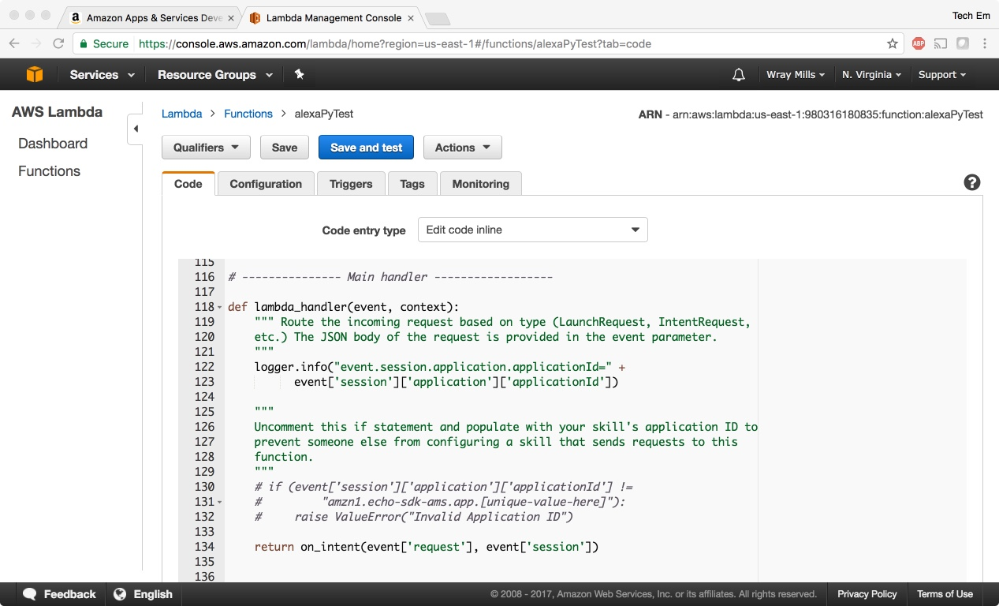


---


### Point to the service
---
* Now, that you have a service, go back to the developer tab
* Copy in the ARN for your lambda


--


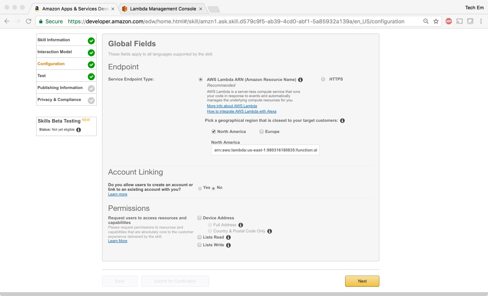


---


### Test
---
#### Three ways to test


--


* From the developer Console
 * Can examine the JSON in and out!
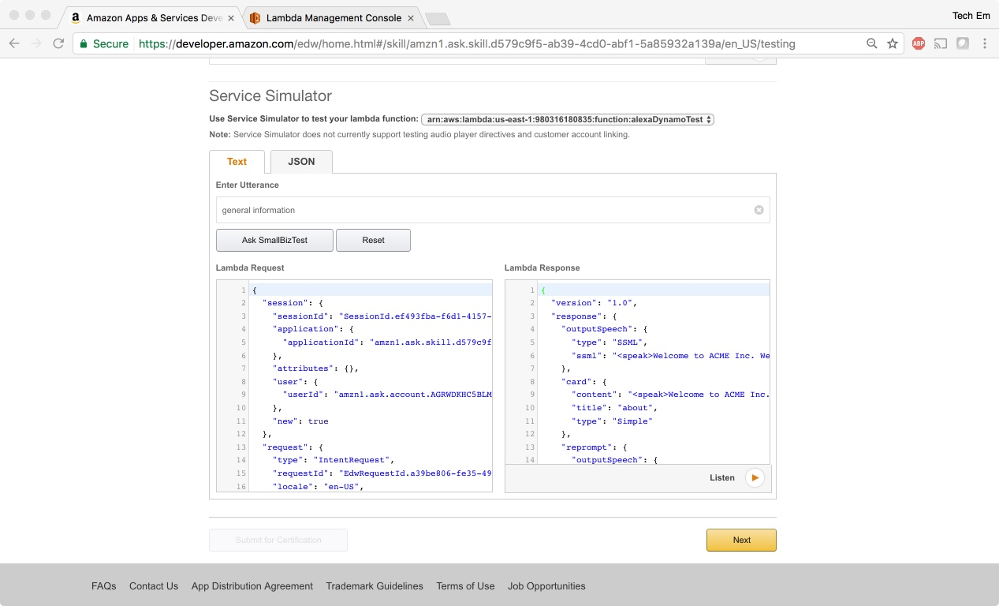


--


* From the AWS lambda console
 * You'll likely end up there anyway if your skill fails
 * Examine cloud watch logs (simple errors prevent any JSON sent back)
 * Either use the test config Alexa JSON or use the input JSON from developer


--


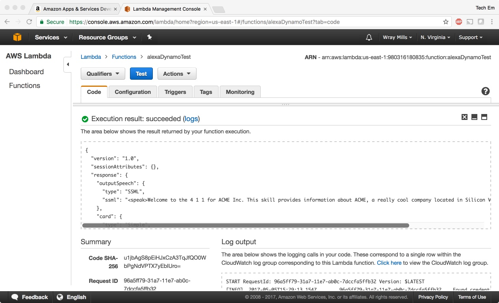


--


* From your device
 * Your skill is immediately available to your account
 * If you don't have a device, use reverb or [echoism.io](https://echoism.io)


---


#### Basic Example, "Tech Em" (techem branch)
##### This is the actual code for a basic published skill
---
#### Copy and paste deployment
* There is a convention for alexa github projects
 * Copy speechAssets/intents.json into your intents
 * Copy speechAssets/utterances.txt into your utterances
 * Copy speechAssets/{slot_type}.txt into your custom slot type (explained later)
 * Copy src/index.[py,js] into your lambda function


--


* So, essentially have three tabs open: developer, aws console, and github
* git speech Assets -> developer

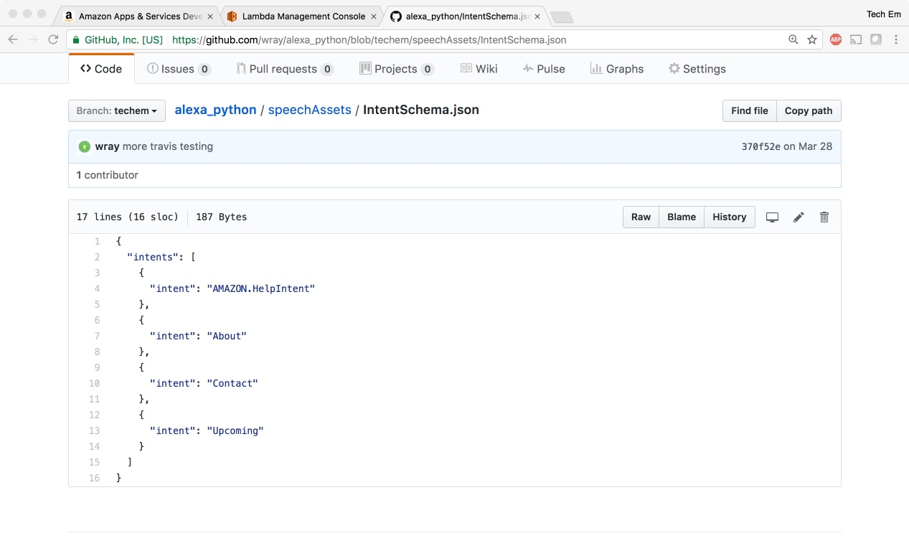


--


* git src -> lambda
* This example simply "hard codes" the responses
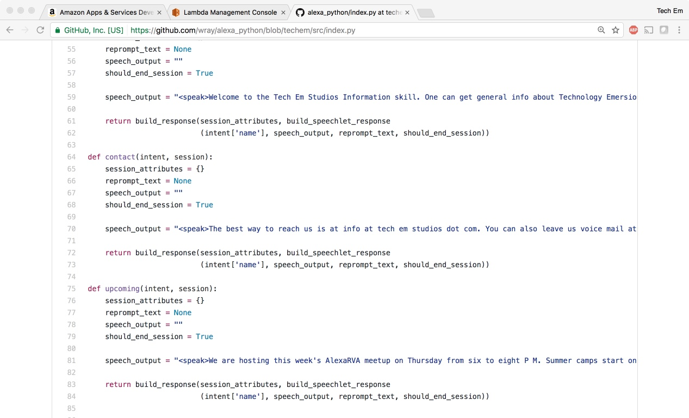


---


<!-- .slide: data-background="#ff0000" -->
### Have a skill running minutes
---
* Use any of the many examples at https://github.com/alexa
* When creating a lambda funcion, you can use an alexa blueprint that matches the github repo and have a skill in 5 minutes!
* Great walkthrough for Node - Fact Skill: https://github.com/alexa/skill-sample-nodejs-fact - updated with new skill builder
* Or use my https://github.com/alexa_python techem branch for Python


---


### Enhanced teaching Example
#### Still need to copy and paste speechAssets to developer
---
* But, let's make the lambda deployment a little better
* While also simplifying the code if you have a new Python developer
* Hello travis-ci


--


* On the master branch, we have separated functions
* One basic Python function per intent
* Focus on simple intent/response skill
* Now that we have two Python files, we would have to zip and upload
* We leverage Travis to do that!

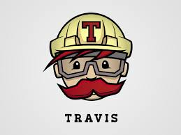


--


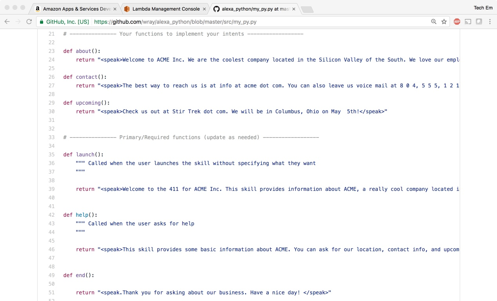


--


* Push to master and travis deploys
* Adding an intent to the service, is as simple as adding a function
* Still need to sync up with the developer intent schema
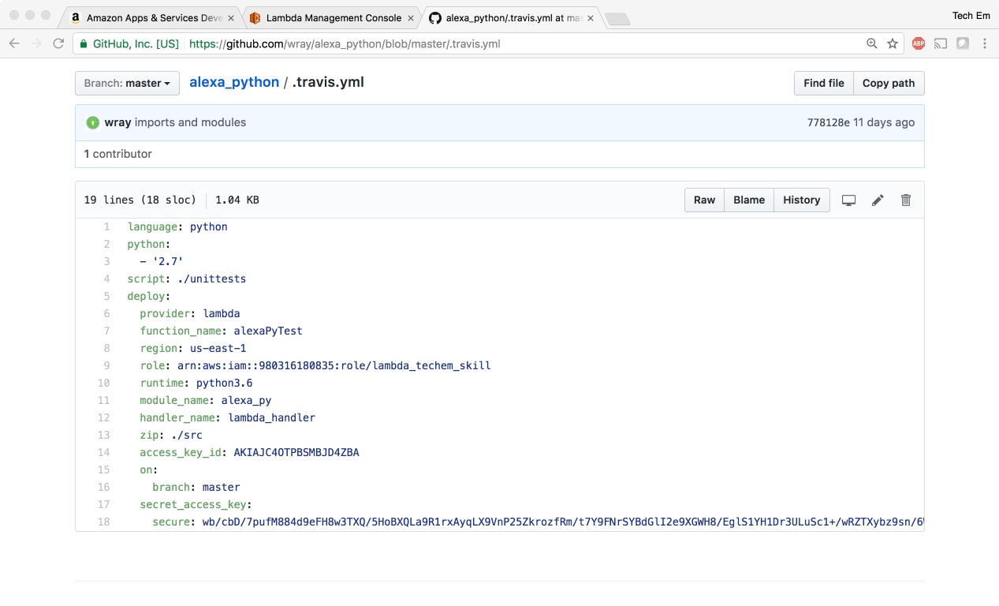


---


### Persist some data
---
* Ok, that was still hard coding, so let's use a data file
* We'll use a JSON file in S3, source in reponses directory
* We'll deploy the lambda and the S3 Together
* And, sneaking in a "slot"


--


* Slots are like parameters for your skills
* Alexa, Ask Small Biz who is {employee}
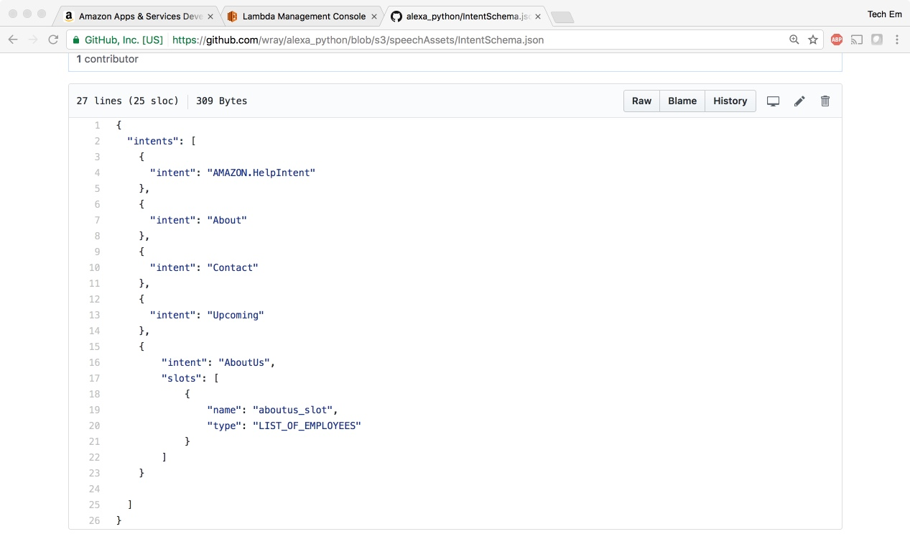


--


* In most situations, one would name the slot something meaningful, like employee
* However, this lambda can be reused for any intents and slots based on JSON convention
* Thus, we still have to keep intents, utterances, and now custom slot types in sync with the service
* Keeping in the same project helps
* Can update by deploying new S3 from local, or updating the S3 directly in your bucket


--


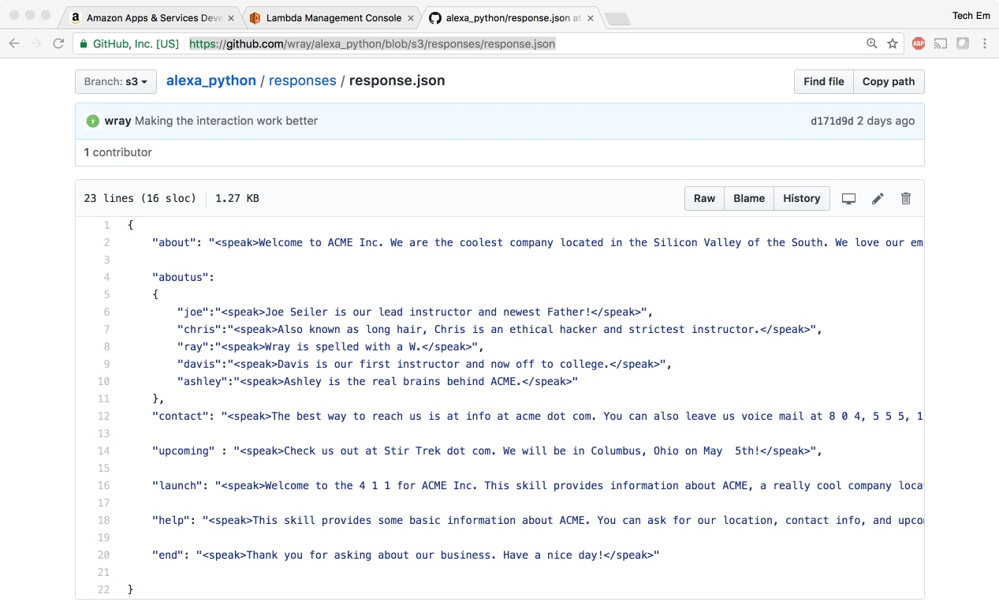


--


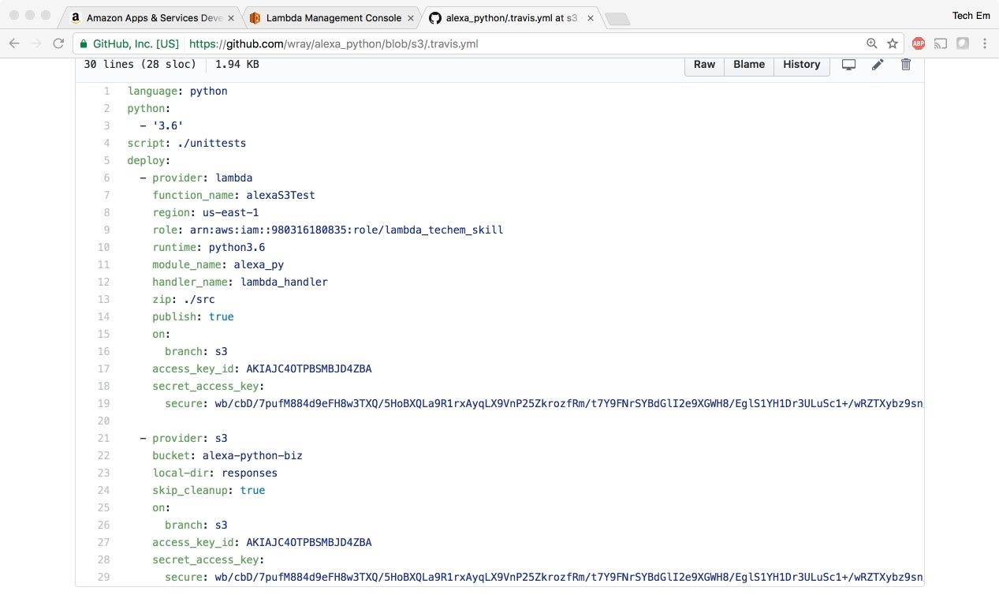


---


### Bump up to a db (dynamo branch)
---
* Ok, let's put this in a db.
* Everything is pretty dynamic, so once deployed, can keep intents and slots in sync between developer and dynamo db


--


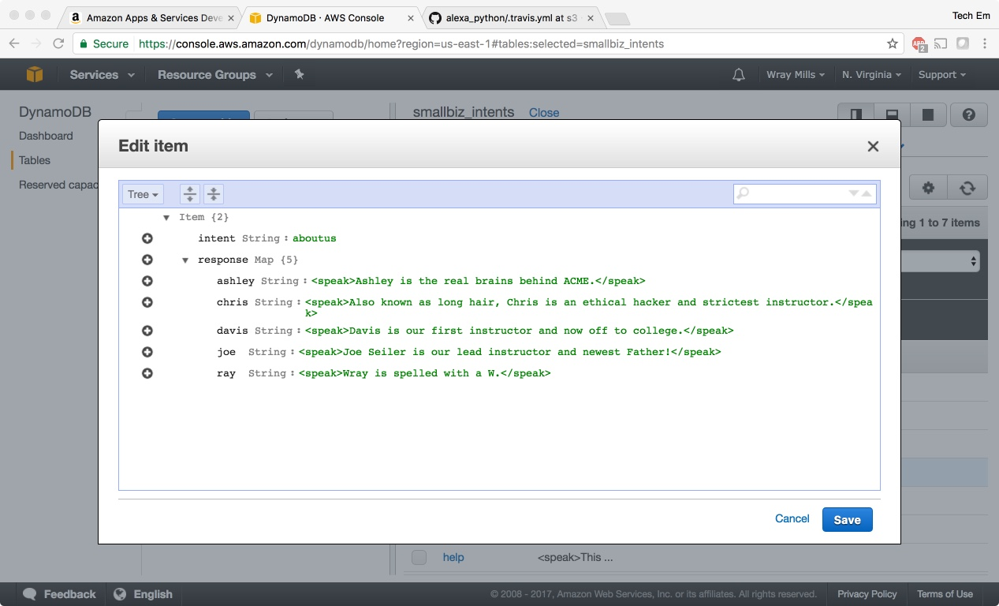	


---


### Build a Service
---
* Now, suppose you start building out some REST services in front of your db
* You can leverage Travis to deploy the same code to two different lambda functions
* One is triggered by API Gateway and the other is triggered by ASK
* Simple interrogation of the lambda_handler event to decipher ASK JSON vs. API JSON


--


### Deploy Together
---
* So, you can ensure your code is in sync.
* Can use custom CRUD or even use the python dyanamo blueprint


--


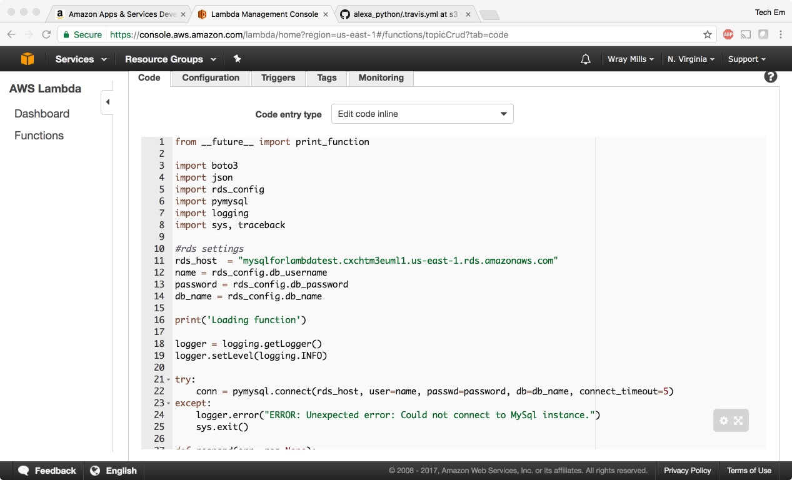


--

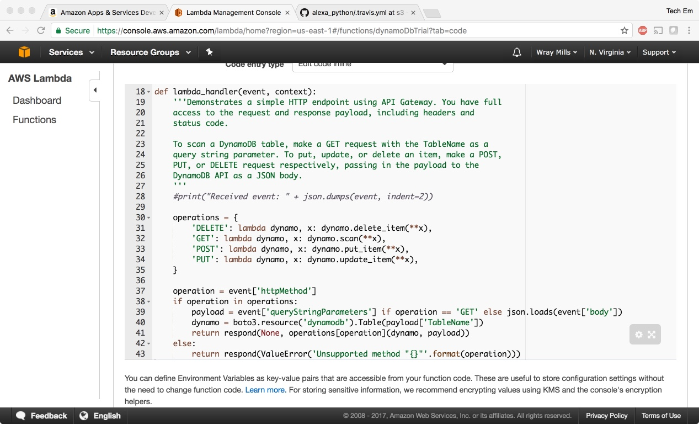


---


### As projects get bigger

* Can separate CRUD Service
* Reuse API access layer
* Deploy to PyPi to be reused on devices or test environments
 * We use PyPi as a means to deploy to Raspberry Pis
 * Can help with independent black box testing

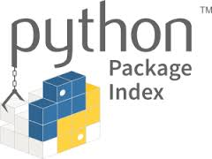


--


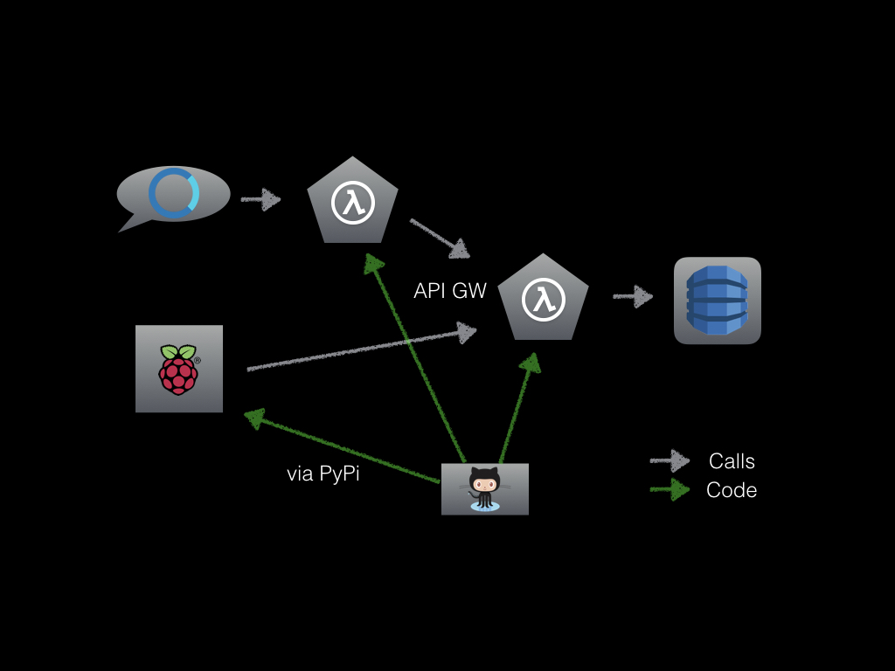


---


## And Wait!
### What about Node/JS?
### What about Serverless.com
---
* Have focused on Alexa, Py and Travis
 * Yes, a bit manual/clear box
* So, Check out serverless.com
* Very easily deploy Node lambda
* And deploy API GW (endpoint)


--


* Can also deploy python code with serverless
* There are many ways to enjoy your cookie, e.g.:
 * Deploy to Alexa lambda and pypi via Travis
 * Reuse pypi module via serverless for API
* If you get serious, try out your own (and let me know)
* And don't forget the testing!!
* And there is also handling of ASK session for deep dialogues
* We are adding a deep decision tree example drive by dynamo which heavily leverages session
* And, just have fun with it!!


--


<iframe width="560" height="315" src="https://www.youtube.com/embed/LsS_WEdYiuA" frameborder="0" allowfullscreen></iframe>


---


### Some parting thoughts
---
* Have fun on the serverless side and use alexa skills as the carrot on a stick to learn more about severless
* Build a service on Azure called by ASK
* But, don't discount this new world of VUI
* Thinking through new skills by starting with your vision for the dialogue is a new and exciting design problem
* And go ahead and publish skills! Check out the Amazon developer site for more info on swag you can get for publishing!


<!-- .slide: data-background="#0000ff" -->
### So... (get your cameras out)

* Create a skill this weekend with your friends/family/kids
* All materials for this talk here: [https://github.com/wray/alexa_python](https://github.com/wray/alexa_python)
 * Open for issues,comments, forks and PRs 
* Also go here: [https://github.com/alexa](https://github.com/alexa)
* And don't forget here: [https://travis-ci.org](https://travis-ci.org)
* And, here: [https://serverless.com](https://servless.com)
* And this: http://flask.pocoo.org/
* https://developer.amazon.com, https://aws.amazon.com, https://alexa.amazon.com
* Questions? More Questions, tweet me @wahwray


</script>
			  </section>
			  
			</div>
		</div>

		<script src="lib/js/head.min.js"></script>
		<script src="js/reveal.js"></script>

		<script>
			// More info about config & dependencies:
			// - https://github.com/hakimel/reveal.js#configuration
			// - https://github.com/hakimel/reveal.js#dependencies
			Reveal.initialize({
				// Display the page number of the current slide
				slideNumber: true,
				dependencies: [
					{ src: 'plugin/markdown/marked.js' },
					{ src: 'plugin/markdown/markdown.js' },
					{ src: 'plugin/notes/notes.js', async: true },
					{ src: 'plugin/highlight/highlight.js', async: true, callback: function() { hljs.initHighlightingOnLoad(); } }
				]
			});
		</script>
	</body>
</html>
